使い方ガイド
「店長のノート」の操作方法をまとめています。困ったときはこのページに戻ってください。
毎日の営業で使う画面
1. 会計処理（会計管理）
お客様が会計を終えるたびに、この画面で1件ずつ記録します。サイドバーの「会計処理」から開き、上部の「会計管理」タブが基本です。
- 画面上部の日付が今日になっているか確認します。別の日を入力・修正したいときは日付をタップするとカレンダーが開きます。
- その日の天気をアイコンでワンタップ記録します（あとで曜日・天候別の傾向を見るときに使います。省略しても構いません）。
- 「＋伝票作成」をタップします。
- 人数を入力し、座席・お客様の名前（ニックネーム）を選びます。どちらも任意項目で、空欄のまま保存できます。名前は入力候補から選ぶほか、その場で新しい名前を入力すればそのまま新規登録されます。
- ドリンク・フードのカテゴリーからタップした商品の数量を＋ボタンで増やします。
- メニューにない商品（差し入れ・単発の品など）は「＋その他ドリンク」「＋その他フード」から名前と金額を直接入力できます。
- 内容を確認し「確定」をタップすると保存され、一覧に戻ります。
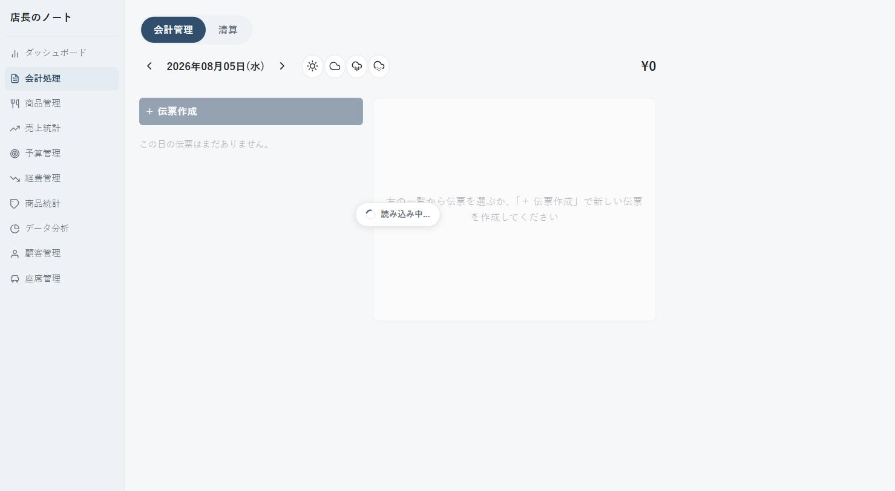
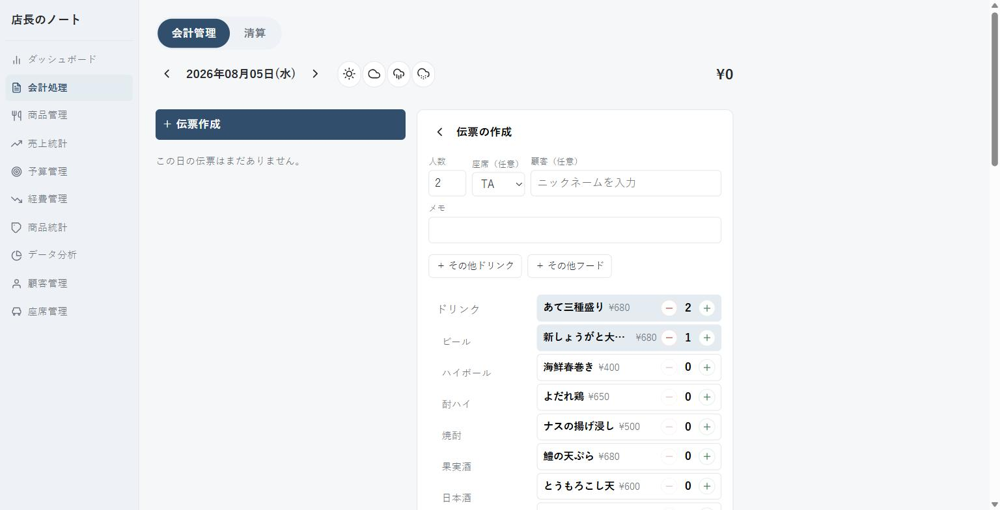
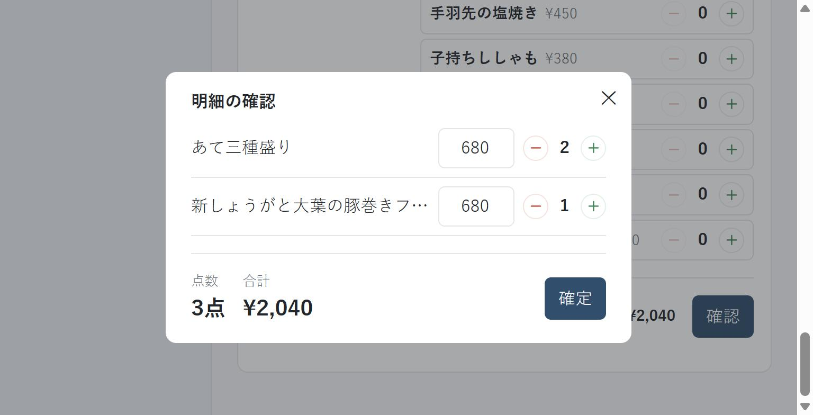
あとから人数・座席・注文内容を直したいときは、一覧のカードをタップすると同じ画面で編集できます。カードの削除アイコンで会計そのものを取り消せます。会計はいつでも自由に編集・削除できます。
2. 会計処理（清算）
1日の営業を締めるときに使います。「会計処理」画面上部の「清算」タブを開きます。
- 対象の日付を確認します（会計管理タブとは別に日付を選べます）。
- レジに入れた「準備金」を入力します。入力欄からフォーカスを外すと自動的に保存されます。
- その日の売上合計・組数、準備金を含めた予想の現金残高が表示されます（支払いはすべて現金のため、売上合計＝現金売上額です）。
- 実際にレジの中を数えて、予想残高と合っているか確認します。
- 問題なければ「レジクローズを実行」をタップします。
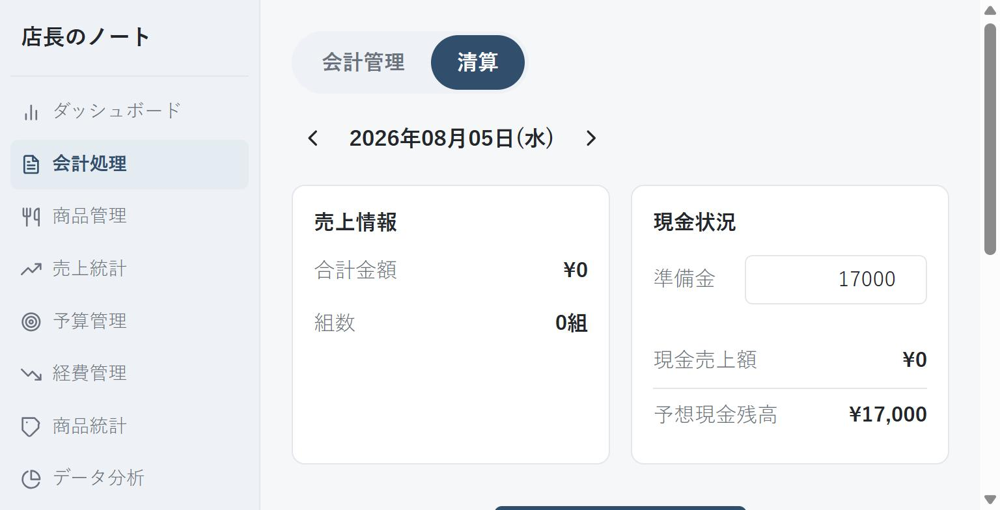
レジクローズは実施した記録として残り、取り消すことはできません（同じ日に何度でも実行はできます）。金額をよく確認してから実行してください。過去の実施履歴はこの画面の下部でいつでも確認できます。
お店の情報を管理する画面
3. 商品管理
メニューの内容を管理します。「商品一覧」「カテゴリー管理」をページ上部で切り替えます。
- 商品を追加する：「商品を追加する」または「商品追加」ボタンから、カテゴリー・サブカテゴリー・商品名・価格・原価（任意）を入力します。
- 商品を編集する：一覧の各行の編集アイコンから、内容を修正します。
- 売り切れ・提供終了にする：一覧の「販売中／販売終了」のスイッチで切り替えます。あとから販売中に戻すこともできます。
- カテゴリーを整理する：「商品カテゴリー」からカテゴリー・サブカテゴリーの作成・名称変更・並び替えができます。並び順は商品一覧の表示順にそのまま反映されます。
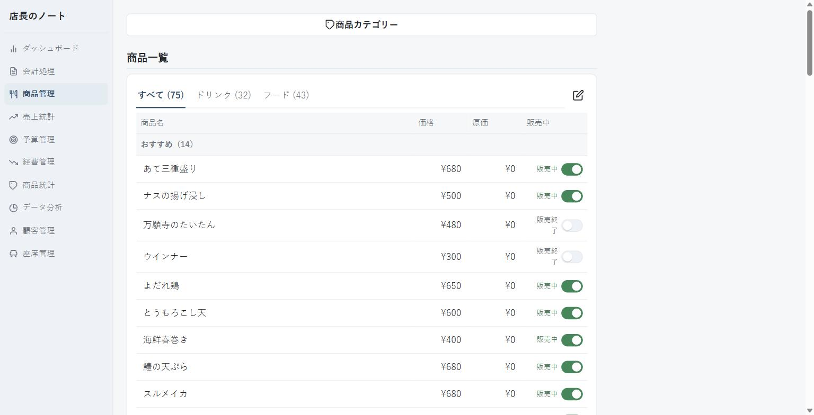
サブカテゴリーが1つもないカテゴリーには商品を追加できません。先に「商品カテゴリー」からサブカテゴリーを作成してください。
4. 顧客管理
常連さんの情報を管理します。
- 新規登録：画面上部のニックネーム欄に入力して「新規登録」します（同じニックネームは重複登録できません）。
- 詳細を見る・編集する：一覧のニックネームをタップすると、電話番号・メモ・よく注文する商品TOP3が確認できます。ニックネーム・電話番号・メモは、入力欄からフォーカスを外すと自動保存されます。
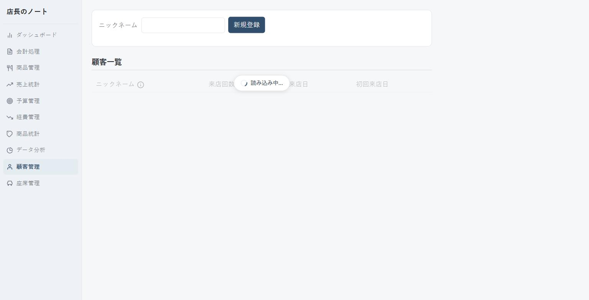
来店回数・最終来店日は、会計処理でその顧客に紐づけて会計を登録するたびに自動で更新されます。この画面から手入力する必要はありません。
5. 座席管理
店内の座席（テーブル・カウンター）の使用可否を管理します。座席番号・種別・定員は固定のため、この画面から新しく座席を追加することはありません。
- 配置図の座席をタップすると切替メニューが開きます。
- 「無効にする」「有効にする」で、その座席を会計処理の座席選択に出すかどうかを切り替えます（例：修理中で使えないテーブルを一時的に外す）。
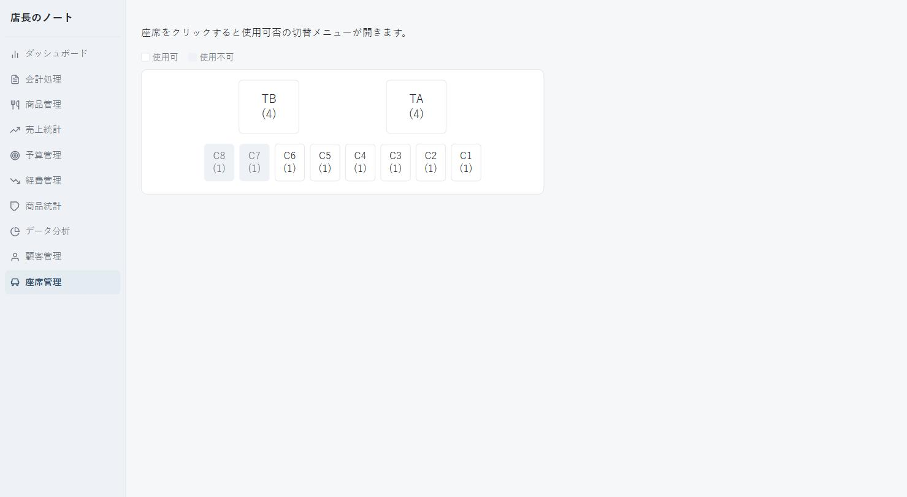
誤操作を防ぐため、座席をタップしただけでは切り替わりません。必ず切替メニューのボタンを押してください。
数字を確認する画面
以下は日々の記録作業ではなく、「見て確認する」ための画面です。まずはどこで何が見られるかだけ把握しておけば十分です。
6. ダッシュボード
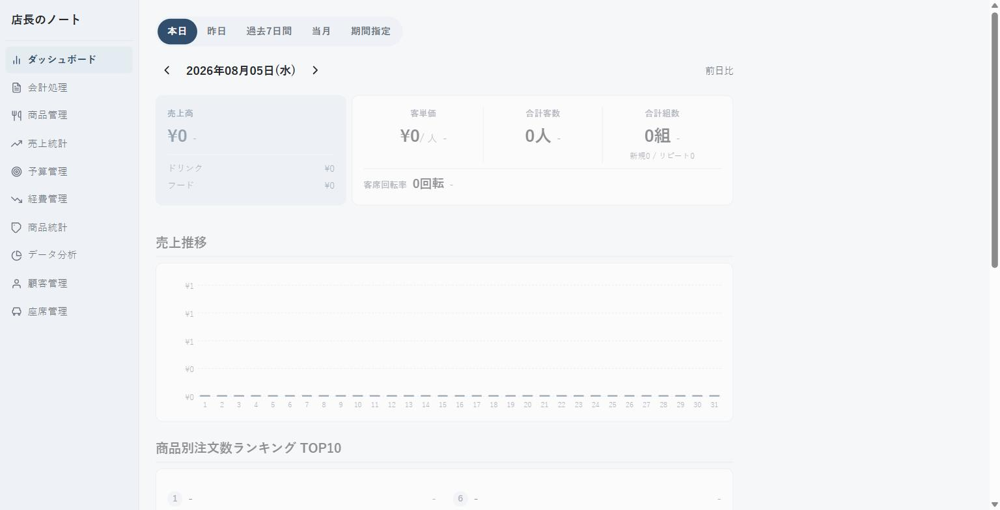
サイドバーの一番上、ログイン後に最初に開く画面です。指定した日・期間の数字をひと目で確認できます。
- 本日／昨日／過去7日間／当月／期間指定を切り替え可能
- 売上高・客単価・客数・組数・客席回転率と、前日（または前週・前月）との比較
- 売上推移グラフ、商品別注文数ランキングTOP10、カテゴリ別売上分布
7. 売上統計・予算管理
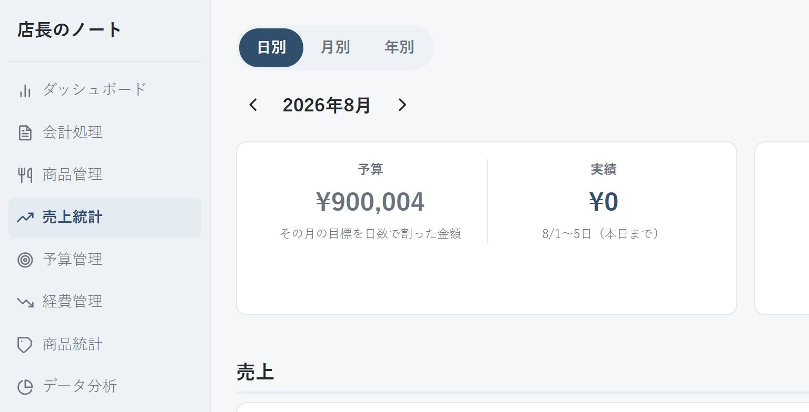
売上統計は日別／月別／年別で実績と目標（予算）を比較する画面、予算管理はその目標（月ごと・日ごとの売上目標）を入力する画面です。
- 売上統計：達成率・目標線付きグラフ・予算比チャートで実績を確認
- 予算管理：月別／日別の売上目標を編集タブから入力（「一括設定」「均等割付」で手早く設定可能）
8. 商品統計・データ分析
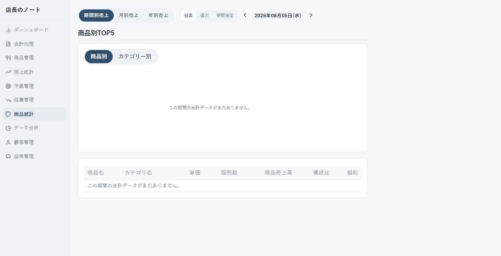
商品統計は商品・カテゴリごとの売上TOP5、データ分析はABC分析・曜日別・天候別・客層別の傾向を確認する画面です。
- 商品統計：円グラフと詳細表で人気商品・カテゴリを確認
- データ分析：どの商品が稼ぎ頭か（ABC分析）、忙しい曜日・天気、新規／リピート比率などをタブで確認
9. 経費管理
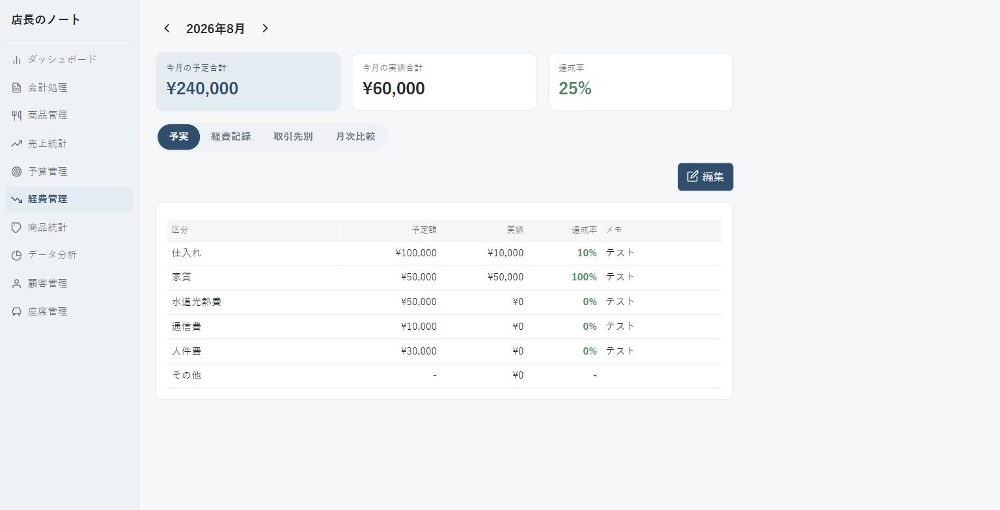
仕入れ・家賃・水道光熱費など、売上以外の支出を管理する画面です。
- 「経費記録」タブの入力フォームから、日付・区分・取引先・金額を記録
- 「予実」タブで区分ごとの予定額に対する達成率を確認
- 「取引先別」「月次比較」タブで支払い状況を振り返り
10. 困ったときは
- 保存ボタンを押しても反応がない・読み込み中のまま止まる
- 通信が混み合っている可能性があります。少し（10秒ほど）待ってから、もう一度操作をやり直してください。改善しない場合は画面を再読み込みしてください。
- 画面が真っ白になった
- 画面を再読み込みしてください。それでも直らない場合は、一度サイドバーの別の画面に移動してから戻ってみてください。
- レジクローズを間違った金額で実行してしまった
- 実行の取り消しはできませんが、履歴として記録が残るだけで、その日の売上データ自体が変わることはありません。次回の実行時に正しい金額で締め直してください。
- 顧客のニックネームを間違えて登録した
- 顧客一覧からニックネームをタップして開く詳細画面で、ニックネームを修正できます（入力欄から外れると自動保存されます）。
- ログインできない
- ログインキーが正しく入力されているか確認してください。分からない場合は、キーを管理している人に確認してください。